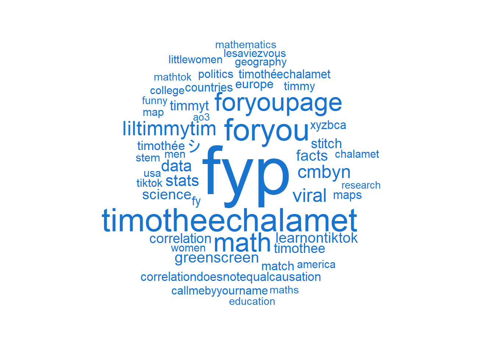

Showcase
Focus on Zeeschuimer
Background
This showcase is intended to illustrate different analysis possibilities of TikTok data downloaded with the Zeeschuimer browser extension.
You can also open this showcase in other interactive and executable environments: 

Data analysis
TikToks that are tagged with the hashtag
statisticscollected via
Zeeschuimerwith .csv export via üêàüêà 4CAT üêàüêà
Data import from
# load packages
library(readr)
statistics <- read_csv(
here("content/07-webscraping-tiktok/data/tiktok-search-statistics.csv"),
col_types = cols(author_followers = col_number()))
# quick preview
statistics %>% glimpse()Rows: 941
Columns: 24
$ id <dbl> 6.813800e+18, 6.832737e+18, 6.845368e+18, 6.927122e+1…
$ thread_id <dbl> 6.813800e+18, 6.832737e+18, 6.845368e+18, 6.927122e+1…
$ author <chr> "onlyjayus", "onlyjayus", "ryguy238", "mason.whaley",…
$ author_full <chr> "actuallyitsbella", "actuallyitsbella", "ryan p", "Ma…
$ author_id <dbl> NA, NA, NA, NA, NA, NA, NA, NA, NA, NA, NA, NA, NA, N…
$ author_followers <dbl> 18500000, 18500000, 28500, 151500, 15700, 319500, 693…
$ body <chr> "You’re sexy. The math proves it #fyp #love #dating #…
$ timestamp <dttm> 2020-04-09 19:44:39, 2020-05-30 20:28:05, 2020-07-03…
$ unix_timestamp <dbl> 1586461479, 1590870485, 1593811442, 1612846242, 16420…
$ is_duet <lgl> FALSE, FALSE, FALSE, FALSE, FALSE, FALSE, FALSE, FALS…
$ music_name <chr> "SexyBack", "original sound", "original sound", "orig…
$ music_id <dbl> 6.696418e+18, 6.832737e+18, 6.845368e+18, 6.927122e+1…
$ music_url <chr> "https://sf16-ies-music-va.tiktokcdn.com/obj/tos-usea…
$ video_url <chr> "https://v16-webapp.tiktok.com/eac3d9cb4566d4ac017e3f…
$ tiktok_url <chr> "https://tiktok.com/@onlyjayus/video/6813800162259897…
$ thumbnail_url <chr> "https://p16-sign-va.tiktokcdn.com/tos-maliva-p-0068/…
$ likes <dbl> 1200000, 910000, 901000, 794300, 740300, 701400, 6490…
$ comments <dbl> 7746, 11900, 3020, 36900, 8179, 8150, 34800, 7592, 28…
$ shares <dbl> 23000, 16600, 1755, 64000, 6397, 1685, 93800, 51300, …
$ plays <dbl> 6700000, 3300000, 5100000, 3800000, 2900000, 2500000,…
$ hashtags <chr> "fyp,love,dating,romance,relationship,crush,people,po…
$ stickers <chr> NA, NA, NA, "that one guy", "Ok…but I guess Timmy is …
$ effects <chr> NA, NA, NA, NA, "Greenscreen", NA, "Disco", NA, "TapT…
$ warning <chr> NA, NA, NA, NA, NA, NA, NA, NA, NA, NA, NA, NA, NA, N…Exploration
Tip
The following graphics (and especially their labels) may appear very small. To view the graphics in their original size, right-click on the images and select “Open image/graphic in new tab”.
Periode in which the TikToks were posted
# Load packages
library(lubridate)
library(sjPlot)
library(ggpubr)
# Display
statistics %>%
mutate(date = as.factor(year(timestamp))) %>%
plot_frq(date) +
theme_pubr()Location parameters of different statistics
statistics %>%
select(likes:plays) %>%
descr()
## Basic descriptive statistics
var type label n NA.prc mean sd se md
likes numeric likes 941 0 50412.33 110696.23 3608.59 16600
comments numeric comments 941 0 980.51 2380.29 77.60 351
shares numeric shares 941 0 1349.89 4755.66 155.03 262
plays numeric plays 941 0 384388.52 750096.58 24452.45 153700
trimmed range iqr skew
26511.33 1395280 (4720-1400000) 37830 6.14
537.56 36900 (0-36900) 791 8.94
527.19 93796 (4-93800) 820 12.24
220367.46 7985100 (14900-8000000) 309300 5.44Distribution of likes
statistics %>%
plot_frq(likes, type = "density")Warning messages displayed
library(sjmisc)
statistics %>%
frq(warning)warning <character>
# total N=941 valid N=24 mean=1.88 sd=0.80
Value | N | Raw % | Valid % | Cum. %
-----------------------------------------------------------------------------------------------------------------------------------------
Learn more about COVID-19 vaccines | 9 | 0.96 | 37.50 | 37.50
Learn the facts about COVID-19 | 9 | 0.96 | 37.50 | 75.00
The actions in this video are performed by professionals or supervised by professionals. Do not attempt. | 6 | 0.64 | 25.00 | 100.00
<NA> | 917 | 97.45 | <NA> | <NA>Text analysis
Corpus creation
# Create corpus based on variable hashtags
crp <- corpus(
statistics,
docid_field = "id",
text_field = "hashtags")
# Display
crp Corpus consisting of 941 documents and 22 docvars.
6813800162259897344 :
"fyp,love,dating,romance,relationship,crush,people,population..."
6832736698938576896 :
"fyp,blacklivesmatter,tiktokpartner,learnontiktok,police,fact..."
6845368010048408576 :
"skittles,statistics,education,fyp,foryou"
6927121729257098240 :
"hotguy,itwasntme,turbotaxlivepick6,doritosflatlife,foryou,wa..."
7052705912317840384 :
"timotheechalamet,fyp,foryou,timothee,peach,callmebyyourname,..."
6909087873081905152 :
"stitch,statistics,staticstics,fyp,foryoupage,trending"
[ reached max_ndoc ... 935 more documents ]Tokenization
# Create tokens based on corpus
tkn <- crp %>%
tokens(
remove_punct = TRUE,
remove_symbols = TRUE,
remove_url = TRUE,
remove_separators = TRUE)
# Display
tknTokens consisting of 941 documents and 22 docvars.
6813800162259897344 :
[1] "fyp" "love" "dating" "romance" "relationship"
[6] "crush" "people" "population" "world" "math"
[11] "stats" "statistics"
6832736698938576896 :
[1] "fyp" "blacklivesmatter" "tiktokpartner" "learnontiktok"
[5] "police" "facts" "fact" "statistics"
[9] "usa"
6845368010048408576 :
[1] "skittles" "statistics" "education" "fyp" "foryou"
6927121729257098240 :
[1] "hotguy" "itwasntme" "turbotaxlivepick6"
[4] "doritosflatlife" "foryou" "wap"
[7] "statistics" "fyp" "foryoupage"
[10] "wap"
7052705912317840384 :
[1] "timotheechalamet" "fyp" "foryou" "timothee"
[5] "peach" "callmebyyourname" "statistics"
6909087873081905152 :
[1] "stitch" "statistics" "staticstics" "fyp" "foryoupage"
[6] "trending"
[ reached max_ndoc ... 935 more documents ]Create Document-Feature-Matrix (DFM)
# Create dfm based on tokens
dfm <- tkn %>%
dfm()
# Display
dfmDocument-feature matrix of: 941 documents, 2,941 features (99.71% sparse) and 22 docvars.
features
docs fyp love dating romance relationship crush people
6813800162259897344 1 1 1 1 1 1 1
6832736698938576896 1 0 0 0 0 0 0
6845368010048408576 1 0 0 0 0 0 0
6927121729257098240 1 0 0 0 0 0 0
7052705912317840384 1 0 0 0 0 0 0
6909087873081905152 1 0 0 0 0 0 0
features
docs population world math
6813800162259897344 1 1 1
6832736698938576896 0 0 0
6845368010048408576 0 0 0
6927121729257098240 0 0 0
7052705912317840384 0 0 0
6909087873081905152 0 0 0
[ reached max_ndoc ... 935 more documents, reached max_nfeat ... 2,931 more features ]Wordcloud
dfm %>%
textplot_wordcloud(
min_size = 1,
max_size = 8,
max_words = 50,
rotation = 0
)
without the searchterm statistics
dfm %>%
dfm_remove(pattern = "statistics") %>%
textplot_wordcloud(
min_size = 1,
max_size = 8,
max_words = 50,
rotation = 0,
color = "dodgerblue3"
)